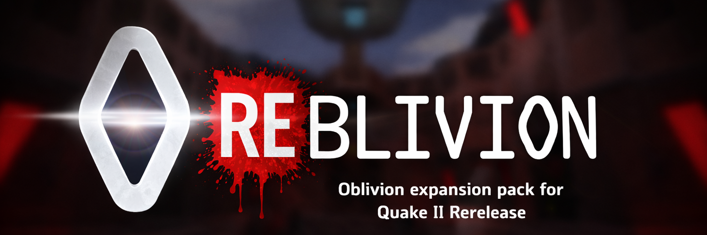

Package Contents
game_x64.dllpak0.pakvideo/obintro.cin,video/obintro.ogv, and subtitle filesREADME.htmlVERSION.txtassets/reblivion-banner.png

This archive contains a packaged reblivion/ directory for bringing Oblivion to Quake II Rerelease. The project focuses on compatibility first, with gradual enhancements over time for modern audiences.
The exact build identity for this package is recorded in VERSION.txt inside the bundled reblivion/ directory.
game_x64.dllpak0.pakvideo/obintro.cin, video/obintro.ogv, and subtitle filesREADME.htmlVERSION.txtassets/reblivion-banner.pngreblivion/ folder lands beside baseq2/.reblivion/ to be replaced if upgrading.+set game reblivion.reblivion/
game_x64.dll
pak0.pak
README.html
VERSION.txt
assets/
reblivion-banner.png
video/
obintro.cin
obintro.ogv
obintro.srt
obintro_de.srt
obintro_es.srt
obintro_fr.srt
obintro_it.srt
obintro_ru.srt
REBLIVION is already in a solid playable state with a working rerelease DLL, packaged data, and active nightly release automation.
It still requires broader map-by-map playtesting, edge-case verification, and continued refinement. Treat this as a serious build, not a final one.
This package already includes the repository's Oblivion data inside pak0.pak, so end users install it directly into the rerelease root instead of assembling a separate retail-era Oblivion directory.
| Item | Status | Notes |
|---|---|---|
| Oblivion compatibility | Done | The rerelease port is up and running as a real playable build. |
Q2Re texture .mat material files |
Done | Material support is already in place for rerelease texture handling. |
| Q2Re glow maps | Done, not final | Glow map support exists, but visual cleanup and tuning remain open. |
| Map remastering | In progress | Maps are still being revisited and polished. |
| Ongoing enhancements | In progress | Testing-driven fixes and refinement work continue alongside broader playthrough validation. |
If you hit a bug or want to suggest an improvement, please file it in GitHub Issues. Bug reports and enhancement requests are both welcome.
Nightly builds use the semantic base version stored in the repository VERSION file and append a nightly stamp and commit suffix to the release tag and archive name.
v<base-version>-nightly.YYYYMMDD.HHMMSS.g<commit>Example:
v0.1.0-nightly.20260317.231500.g1a2b3c4| Item | Purpose |
|---|---|
game_x64.dll |
Windows x64 game module for the Quake II rerelease runtime. |
pak0.pak |
Packaged Oblivion assets and data generated from the repository's pack/ tree. |
video/ |
Loose intro media that must remain outside the pak for the rerelease packaging flow. |
VERSION.txt |
Human-readable build metadata including the release tag, UTC build time, and source commit. |
README.html |
Standalone release documentation with local branding assets included in the archive. |
Original creative credit remains with the original Oblivion release by Lethargy Software. REBLIVION is a rerelease porting and packaging effort built on top of that work.
This repository is distributed under the GNU General Public License v3. See the repository LICENSE file for details.